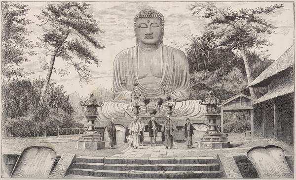

“Dai Butsu”
The Sunrise Kingdom (1879)
One of the holiday resorts most easy of access for the jaded Tokyo resident is the little seaside town of Kamakura, which lies, as the crow flies, some forty miles south-west of Tokyo. The railway journey takes about two hours from Tokyo, and one from Yokohama. The road presents no features of interest, and the tourist had better provide himself with a newspaper or book to while away the time in the train.
When he emerges from the station at Kamakura he will find himself in a broad valley between low hills covered with bamboos and conifers. The whole plain is covered with little hamlets dotted here and there, and what will perhaps first strike his eye will be a fine avenue of trees running from the sea in a straight line up to a great red temple which stands out conspicuously on an elevated plateau at the foot of some green hills. He will find that the hillsides have in many places been cut out and levelled, as though for building purposes, and on asking the reason for all these elaborately prepared sites, which yet show on them no vestiges of buildings of any kind, he will be told that centuries ago, before Yedo existed, Kamakura was a flourishing city and the seat of the actual Government of the country, though it has now shrunk to the dimensions of a small country town. If he follows the avenue right down to the water’s edge he will find himself on a sandy beach in a bay between two headlands, with the waves tumbling in to the shore from the great ocean before him. Right in front of him he will see on the horizon the smoking volcano of Vries Island, or, as the Japanese call it, Oshima. If he climbs the hills to the right, he will get a magnificent panorama over the peninsula of Izu and the mountains of Hakone. High up in the background of the picture will be the snow-clad cone of peerless Fuji, and at his feet, Enoshima, the St. Michael’s Mount of Japan, “bosomed in the blue” of the placid waters. If he turns eastward and climbs to the summit of the promontory on his left, he will get a similar panorama over Misaki and the entrance to the bay of Yokohama. On a clear day he will descry the ships passing to and fro through the comparatively narrow entrance to the gulf, and his gaze will reach as far as the serrated mountain range of Boshu, known among the Japanese as Nokogiriyama. He will see no towns, but one cloud of smoke near by him will mark the site of Yokosuka, with its great naval dockyard, at which was laid down in 1905 a battleship, the Satsuma, nearly one thousand tons greater than our English Dreadnought. Another cloud of smoke will mark Yokohama, and the distant horizon will always be heavy towards the north with the clouds that constantly hang over the manufactories of Tokyo.
Every-day Japan (1909)
◀ HakoneKobe ▶